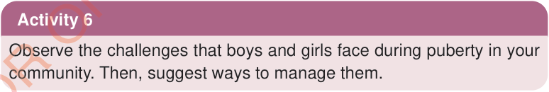

They feel confident in making decisions based on their beliefs. This can cause conflicts with parents, guardians, or older relatives. However, these disagreements are normal and do not harm family relationships.
(c) Desire to compete: Adolescents enjoy competing and comparing themselves with their peers in different aspects of life. They strive to be the best in everything they do, both at home and outside, and they want to be seen as role models.
Emotional changes during puberty
Adolescents experience significant emotional changes during puberty, including:
(a) Intense and fluctuating emotions: During puberty, emotions change quickly. A small event can make a teenager very happy, angry, or excited. They may cry or feel frustrated over minor issues. This is normal because their brain is still learning to manage emotions. If family and society do not understand this, conflicts may occur.
(b) Increased self-consciousness: Teenagers become highly aware of how they appear to others. They care about their physical appearance and fashion choices. They often compare their bodies to their peers or celebrities. This is why many teenagers imitate the dressing styles, hairstyles, speaking and even walking styles of famous people they admire.
Ways to cope with changes during puberty

Observe the challenges that boys and girls face during puberty in your community. Then, suggest ways to manage them.
The changes during puberty in boys and girls cannot be avoided. However, following some strategies can help to reduce the challenges of these changes. To manage puberty effectively, the following are recommended:
Engaging in physical exercises: During puberty, adolescents grow quickly, gain weight, and develop more strength. Exercises improve blood circulation, keep the body active, reduce stress and promote happiness.
Getting sufficient sleep and eating a balanced diet: Sufficient sleep is essential for a growing body. It helps relieve tiredness and regulate